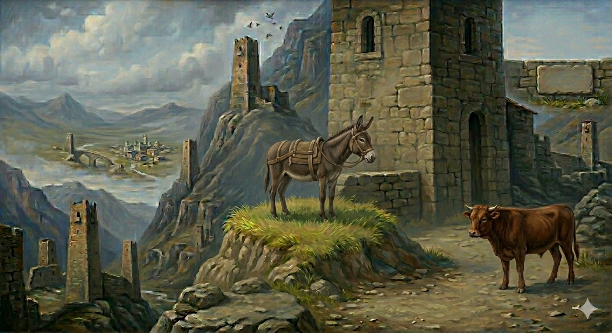

И.А. Дахкильгов. Хьехаме дувцарш - поучительные рассказы-притчи.
И.А. Дахкильгов. Хьехаме дувцарш - поучительные рассказы-притчи. Из ингушского фольклора.

Говра хила г1ийрта вир
Массане “вир, вир” оалаш, ше бегйоахаш хилар к1орда а даь, виро лаьрх1ад: “Кхы сайна уж т1ехбеттамаш дайтаргдац аз, говра хилча бакъахьа я со”. Хьалхарчоа говрий мотт 1омабе лаьрх1ад виро. Лакхача гувна а этта, 1урден сарралца говрах 1аха г1ерташ лаьттад из. Цхьаккха дарах говрий мотт 1омабеннабац цунга. Из х1ама дац! Говрий мотт 1омабе еннача вирана ший вирийбар а бицбеннаб. - Фу леладу 1а? Фу 1имадаш я 1а ер? – хаьттад т1ехъяьнна йодача сирг1илго. - “Вир, вир” яхаш дола т1ехдеттамаш к1орда а даь, говра хила лаьрх1адар аз. Говрий мотта 1омабе а енна, е из а 1ома ца луш, сай вирий мотт а бицбенна йисай со, - аьннад виро. - Эшшехь! – аьннад сирг1илго, - говра-м хьох укх малха к1ала хургъяцар, лертт1а вир-мукъаг1а хинна далара хьох.
РУССКИЙ
Осел, стремившийся стать лошадью
Надоело ослу, что все частят его словами “осел, осел!” и решил: “Больше не позволю надсмехаться надо мною. Стану-ка я лошадью”. Для начала осел решил научиться ржать по-лошадиному. Взошел он на пригорок и с утра до вечера пытался подражать лошадиному ржанию. Однако ничего из этого не вышло. Мало того, пытаясь обучиться ржанию, осел и вовсе забыл свой ослиный крик. - Чего расшумелся? Что за звуки ты издаешь? – спросил у осла проходивший мимо бычок. - Видишь ли, надоели мне постоянные попреки “осел” да “осел”, и решил я стать лошадью. Да вот беда, пока я обучался лошадиному ржанию, я забыл свой ослиный крик, и в то же время не научился ржать по-лошадиному. - Эге-е, - сказал бычок, - лошадь из тебя и подавно не получится. Было бы здорово, если бы из тебя получился хотя бы нормальный, обычный осел.
ENGLISH
The Donkey Who Wanted to Be a Horse
Fed up with being called 'donkey, donkey!' all the time, the donkey decided: “I won’t let them laugh at me any longer! I’m going to become a horse!" First, he decided to learn to neigh like a horse. He climbed a hill and tried from morning until night to imitate a horse’s neigh. However, nothing came of it. In trying to learn to neigh, the donkey had also forgotten his own bray. “What’s all the racket about? What sort of noises are you making?” asked a young bull passing by. “You see, I’ve had enough of being called ‘donkey’ all the time, so I decided to become a horse. But here’s the trouble: while I was learning to neigh like a horse, I forgot my donkey bray. At the same time, I didn’t manage to learn to neigh like a horse." “Oh dear,” said the young bull. “You’ll never make a horse of yourself. It would be great if you could at least turn out to be a normal, ordinary donkey."
НОХЧИЙН
Говр хила г1иртина вир
Массара а “вир, вир” олуш, шеца бегаш бар к1орд а дина, виро сацам бина: “Кхин сайна и т1ехдеттамаш дойтур дац ас, говр хилча бакъахь йу со”. Йуьхьанца говрийн мотт 1амабан сацам бина виро. Лекхачу гунан т1е а х1оьттина, 1уьйранна дуьйна сарралц говрах 1еха г1ерташ лаьттина иза. Х1уъа дарах а говрийн мотт 1амабелла бац цуьнга. Иза х1ума дац! Говрийн мотт 1амабан йоьллучу виран шен вираниг а бицбелла. - Х1ун леладо ахь? Х1ун г1ораш йу ахь йийраш? – хаьттина т1ехъйаьлла йодучу старг1ано. - “Вир, вир” бохуш долу т1ехдеттамаш к1орд а дина, говр хила сацам бинера ас. Говрийн мотт 1амабан а йоьлла, йа иза а 1ама ца луш, сайн варрийн мотт а бицбелла йисна со, - аьлла виро. - Эшшехь! – аьлла старг1ано, - говра-м хьох х1окху малхан к1ел хиръяцар, ларт1ахь вир мукъана хилла йелара хьох.
ПОГОВОРКИ
Дуне дуаш вац, ялат дуаш веце. - Тот не живет настояшей жизнью, кто хлеб не ест (не растит). Хина йисте вахе а хина хьурмат де (кхом бе). - Даже живя у реки, воду береги (цени). Хьаошалг1а вахача модзаца мара чай молаш вац, ший ц1аг1а маькха зирталг бац. - В гостях пьет только чай с медом, хотя дома нет и хлебной крошки.